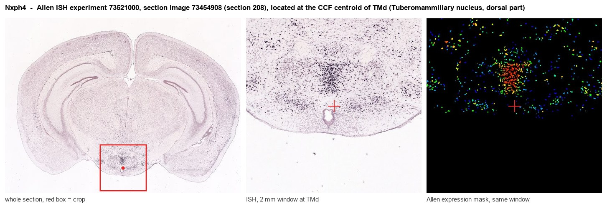
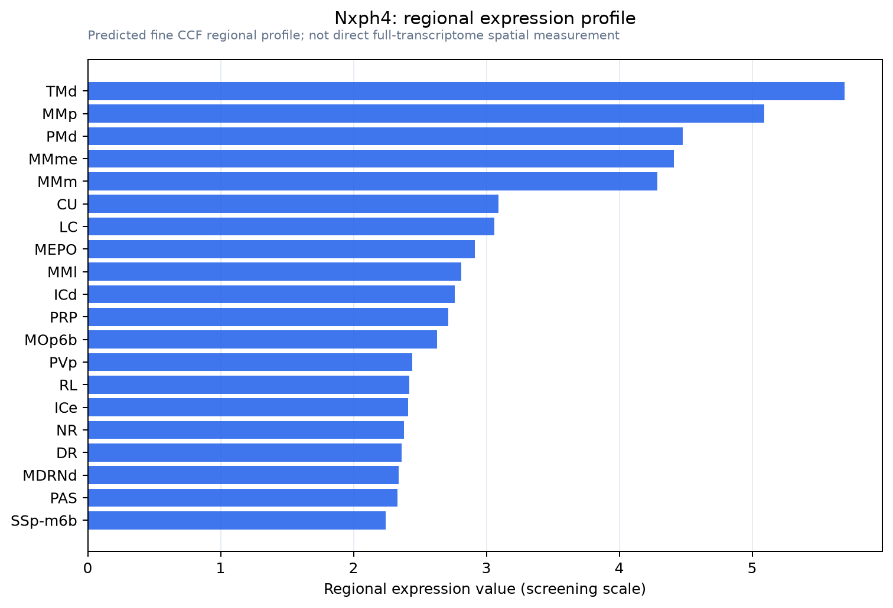

Nxph4
Spatial tier: REGION_BIASED · Class: OTHER · Top region: TMd (Tuberomammillary nucleus, dorsal part) · Positive regions: 46/554
43.1Discovery Score
42.1Targetability Score
CEvidence grade C
What this means: Nxph4: fine CCF profile is region-biased toward TMd (top regions: TMd, MMp, PMd, MMme, MMm); this is a discovery lead, not direct proof.
Function in TMd: evidence, prediction, innovation
- Gene function
- NXPH4 (neurexophilin-4) is a small secreted glycoprotein of the neurexophilin family. Neurexophilins are released and bind the LNS domain of alpha-neurexins at synapses, acting as peptide-like ligands that shape synapse specificity and function; NXPH4 is the least characterised family member and is best known as a selective marker of cortical layer 6b/subplate neurons.
- Region function
- The dorsal tuberomammillary nucleus contains the brain's only histaminergic neurons; they project diffusely to cortex, thalamus and hypothalamus and promote wakefulness, arousal and attention, and they are the target of sedating antihistamines.
- Published in this region
- none No region-specific literature found. All neural NXPH4 work concerns cortex, where it is a defining marker of layer 6b/subplate neurons (Chang 2024; Kim 2025); nothing has been published about neurexophilin-4 in the hypothalamus or in histaminergic neurons.
- Predicted function
- Prediction: secreted NXPH4 from tuberomammillary neurons would act as an alpha-neurexin ligand that specifies which inputs (GABAergic ventrolateral preoptic, orexinergic, adrenergic) make and maintain synapses on histaminergic cells, a wiring problem central to sleep-wake switching. Deleting Nxph4 in Hdc-positive neurons is predicted to change the balance of inhibitory versus excitatory input onto the TMN rather than intrinsic excitability, producing a flip-flop switch that is less stable: more frequent, shorter wake bouts and slower sleep-to-wake transitions.
- Innovation
- ★★★★★ 5/5 A synapse-organising secreted ligand in the histaminergic arousal nucleus is untouched, and its only neural literature is in a completely different structure.
- Tools
- Nxph4-2A-CreER driver line (Allen/JAX, made for layer 6b) doubles as a TMN entry point; Nxph4 floxed/knockout alleles; anti-NXPH4 antibodies; Hdc-Cre for histaminergic intersection.
- References
Direct evidence located at the region

Allen ISH experiment 73521000, section image 73454908 (section 208): the section that contains the CCF centroid of Tuberomammillary nucleus, dorsal part according to the Allen image-to-atlas alignment (reference_to_image), with a 2 mm window around that point. Left: whole section, red box = window. Middle: ISH signal. Right: Allen's expression-mask view of the same window. open this image in the Allen viewer
Look it up yourself: Allen Mouse Brain ISH for Nxph4Allen reference atlas: TMd (structure 1126)ABC Atlas MERFISH viewer(in the ABC Atlas choose dataset MERFISH-C57BL6J-638850-CCF, colour cells by gene "Nxph4" or by parcellation_substructure "TMd")All genes confined to TMd + 3-D brain
Direct spatial evidence
MERFISH REGION LOCATOR

Regional expression figure

Predicted WMB × fine-CCF profile; not direct full-transcriptome spatial measurement.
Spatial profile
Evidence and specificity
- Evidence status
- PREDICTED_FINE
- Direct sources
- None; predicted localization only
- Exclusive threshold
- 12 positive regions out of 554
- Spatial specificity
- 0.282
- Top-region fraction
- 0.042
- Filter status
- PASS
Interpretation limits
- Cell-type-to-region projection is imputed expression, not direct spatial measurement.
- Adult reference atlases do not establish stability across age, sex, strain, state, or disease.
- Transcript abundance does not guarantee protein abundance or genetic-tool performance.